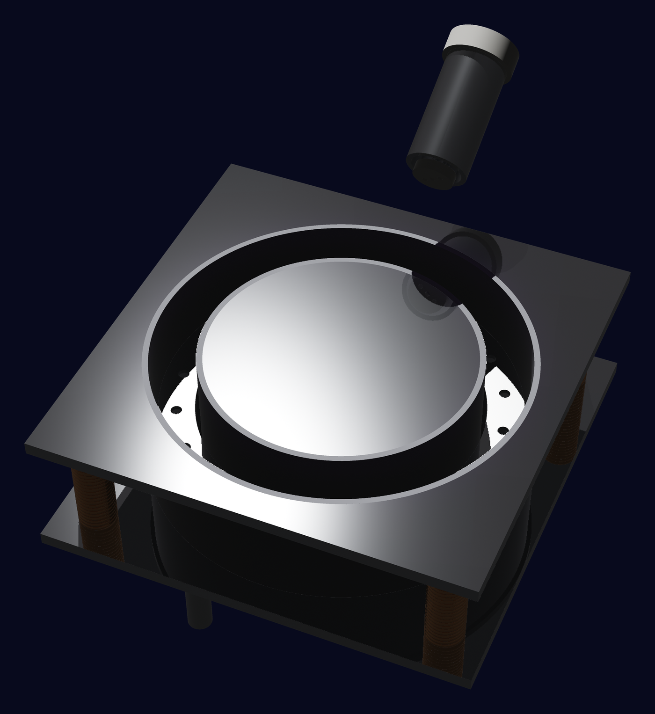

Thruster development
Work through design reviews, component sizing and procurement, followed by manufacturing, assembly and preparation for a ground demonstration. The work spans the thruster, its supporting systems and the test setup.

Imperial College London
We are Imperial College Electric Propulsion, a student-led team designing and building a 1 kW Hall-effect thruster.
Imperial College
Electric Propulsion
About ICEP
ICEP brings students at Imperial together to learn about electric and deep-space propulsion through practical engineering, theory sessions and shared project work.
Members can develop skills in CAD, manufacturing, electronics and Julia programming through team training and project work. All courses are welcome, and no previous Hall-thruster knowledge is required.
Funded by Imperial’s Department of Aeronautics.
Our first project
In developmentWe are developing our first argon Hall-effect thruster, taking it from design and simulation towards manufacture and ground testing.
Materials for the first thruster have been obtained. We are adapting the design to those materials and developing the components and supporting systems needed for testing.

Our first thruster is the starting point for a wider programme of student engineering, mission development and collaboration.
Work through design reviews, component sizing and procurement, followed by manufacturing, assembly and preparation for a ground demonstration. The work spans the thruster, its supporting systems and the test setup.
Develop conceptual spacecraft missions and use them to define propulsion requirements. Explore spacecraft designs and how thrusters and their supporting systems could scale for future missions.
Build practical experience through technical training, shared research and project work. Grow a community across disciplines and work towards links with other student electric propulsion and CubeSat teams.
Explore other propellants and technologies such as gridded-ion engines, with student CubeSat integration as a future goal. We also want to encourage collaboration between universities and help develop opportunities for student electric propulsion competitions.
Our teams
Our work is organised into two main branches, with a part-time Marketing role alongside them. Here’s what you can get involved in.
Mission requirements, thruster design and physical hardware.
Define a theoretical spacecraft mission and use it to set thruster requirements. Coordinate the subteams, track project progress and help report our work to stakeholders and academics.
CAD and Design
Work on thruster sizing and conceptual geometry, then develop detailed 3D models in Fusion 360. Learn how engineering requirements become a design the team can use.
Manufacturing, Assembly, Integration and Testing
Develop and integrate the magnetic system, cathode and anode. Manufacture and assemble the thruster, then prepare the hardware and experiments for testing.
Develop our own simulation tools and work with established engineering software.
Code and tool development
Build our own modules and workflows around PEPAPIC, using Julia programming and particle-in-cell modelling to connect thruster designs with simulations.
Engineering analysis
Learn and apply tools such as FEMM and Ansys to magnetic circuit modelling, thermal analysis and gas flow through the anode.
Part-time role
Help advertise the team, speak with potential sponsors and share ICEP’s work through outreach and media. This informal role can sit alongside your main project work.
Get involved
We welcome Imperial students from all years and courses. You don’t need previous electric propulsion experience to get involved.
Ask about joiningInterested in supporting student engineering? Get in touch about materials, manufacturing, software or financial support.
icelectricprop@gmail.comSupporting ICEP
Imperial College LondonDepartment of Aeronautics · Funding support